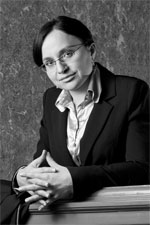

Zespół Kancelarii
Grzegorz Dawiec
- Absolwent Wydziału Prawa i Administracji Uniwersytetu Wrocławskiego, uzyskany tytuł - magister prawa,
- Absolwent Wydziału Prawa i Administracji Uniwersytetu Wrocławskiego uzyskany tytuł - magister Zarządzania i Marketingu,
- Radca prawny; członek Okręgowej Izby Radców Prawnych w Wałbrzychu.
- Od 1999 roku związany z nieruchomościami, budową i zarządzaniem,
- Odpowiedzialny za pełny proces inwestycyjny jako członek zarządu w firmie deweloperskiej,
- Posiada uprawnienia pośrednika nieruchomości oraz ukończył kursy z zakresu zarządzania nieruchomościami,
- Specjalizuje się w procedurze cywilnej, zarządzaniu nieruchomościami, prawie spółdzielczym, prawie administracyjnym ze szczególnym uwzględnieniem prawa budowlanego i planowania przestrzennego oraz sądownictwie polubownym,
- Posługuje się językiem angielskim i czeskim.

Anna Giercarz
-

- Absolwent Wydziału Prawa Uniwersytetu Mikołaja Kopernika w Toruniu, uzyskany tytuł – magister prawa,
- Stypendystka Uniwersytetu w Padwie we Włoszech na Wydziale Prawa,
- Radca prawny; członek Okręgowej Izby Radców Prawnych we Wrocławiu,
- Doświadczenie zawodowe zdobywała w kancelariach prawnych oraz przedsiębiorstwach gospodarczych,
- Specjalizuje się w prawie cywilnym, prawie spółek, w tym w czynnościach związanych z inwestycjami podmiotów zagranicznych, prawie reklamy oraz prawie ochrony konkurencji,
- Posługuje się językiem włoskim i francuskim.
Napisz lub zadzwoń
tel. +48 (71) 784 55 92
fax +48 (71) 724 25 34
ul. Wierzbowa 15/16
50-056 Wrocław